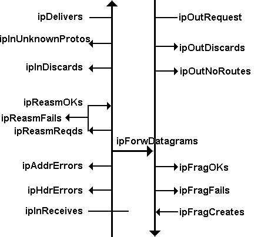

The IP Address Table
Every network interface is assigned an IP address, and so there is a table entry for each IP address. Sometimes the number of IP address is larger than the number of interfaces. This is because a single interface can be assigned more than one IP address.
All of the information in this table are read-only, and thus we should expect that it will be configured directly at the device.
The IP Routing Table
The Ip Routing table contains information needed to route datagrams . IP looks up a destination in the table in order to choose the next-hop system to which a datagram should be sent.
Where do routing information come from ?
- From stable, manually configures entries
- Via Internet Control Message Protocol (ICMP) Redirect message. When a router receives a datagram that is not supposed to receive, it sends a Redirect message back to the system. This message contains the correct next hop for this destination.
- From neighbouring routers that provide information via an automatic routing protocol.
Routing protocols
Routers use an automatic routing protocol to recalculate their route after a link failure, device failure, or when a new router is added to the network. Modern routers can run several routing protocols at the same time. A routing protocol contains the following information :
- the rules whereby routers maintain awareness of each other and exchange current information with each other
- The algorithm used to calculate route based on current information
When an automatic routing protocol is used, routing table entries will be updated dynamically. And an entry which has not been refreshed for a long time will be discarded. The ipRouteAge variable keeps track of how long it has been since an entry was refreshed.
Sometimes a router can throw away perfectly valid entries because it needs to add some new entries to its table but has run out of space. The ipRoutingDiscards variable counts the number of valid routing table entries that have been discarded.
The ipForwardTable
The ipForwardTable is the alternative to the original ipRouteTable. Indeed, this table is indexed by destination, protocol used, forwarding policy, and next hop whereas the ipRoutingTable is indexed only by the route destination. Indexing by the next hop as well as the destination supports mulipathing. Indexing by protocol enables IP to search first for routes learned via a more advanced protocol, such as OSPF (Open Shortest Path First).
The ipNetToMediaTable
This table is intended to replace the now deprecated Address Translation table described in the at group. It maps IP addresses to technology-specific addresses. This new table includes the ipNeToMediaType variable. This variable indicates whether an entry is a static manually entered type, or was discovered by a dynamic protocol such as ARP (Address Resolution Protocol).
IP Statistics
Some variables record counts of incoming and outgoing IP traffic and errors.
What happens to incoming and outgoing datagrams ?
Some incoming datagrams get discarded, some are delivered to protocols (such as TCP or UDP ) at the system, and some are forwarded.
About the outgoing activity, datagrams may be discarded. And among those successfully forwarded, some need to be fragmented first. Occasionally, datagrams fragments arrive and must be held until all of the pieces are put together.
The figure below shows a Case diagram of the flow of incoming datagrams arriving at the IP layer. This figure shows datagrams leaving or joining the flows into and out of the system.


Case diagram datagram flows.